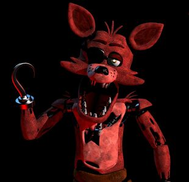

Foxy

“Never underestimate the cunning of a pirate. Or a fox for that matter!”
- Foxy
- Foxy is an animatronic pirate fox as well as a major antagonist in the Five Nights at Freddy's franchise. He is a discontinued animatronic entertainer who resides at his own separated stage from Freddy Fazbear's Pizza.
- Along with the other animatronics, Foxy will try to forcefully stuff any human she sees after hours into a Freddy Fazbear suit, resulting in death. Chica like the other classic animatronics was once a human child who was killed and now haunts the animatronic looking for revenge against her murderer William Afton.
Physical Appearance
Classic Foxy
- Foxy is a large, animatronic fox with crimson tattered fur. He has yellow eyes, red eyebrows, and three strings of hair from the top of his head. He has a hook for his right hand and his left hand has been worn down to the endoskeleton. He also bears an eye patch that is folded over his right eye, although he is usually seen with it above his eye rather than covering it. Unlike the stereotypical fox, Foxy doesn't have a tail.
- Foxy wears brown linen pants that are especially shredded at the legs. He appears to be damaged, as parts of his machinery are exposed. It can clearly be seen that both his legs, with the exception of his upper thighs, and his left hand is completely bare, exposing the metal endoskeleton underneath. His chest is ripped in various places, showing the endoskeleton beneath, and his arms and stomach are torn apart as well, with tuffs of fur on the shoulders. He also seems to have a slightly droopy left eyelid. Like all of the other Fazbear characters, Foxy has a set of teeth. Foxy's teeth, however, appear to be the sharpest out of all the animatronics, being similar to those of an actual canine, while the other animatronics' teeth resemble human-like dentures or herbivorous teeth. It's also notable that, in keeping with the pirate motif, he has several golden teeth and also appears to have some teeth missing, though this may be due to him needing repairs. He also has a hanging jaw; this is also likely due to him needing repairs. His ears are articulated, thus able to move back and forth and left to right. His upper jaw muzzle is speckled on the sides with black dots, indicating beard stubble or translucent whiskers. It is possible that these whiskers may have simply been removed due to disrepair.
Withered Foxy
- Withered Foxy, Foxy's withered form, first appears in Five Nights at Freddy's 2 and makes a cameo in Five Nights at Freddy's 3, and finally returns in Five Nights at Freddy's VR: Help Wanted as an antagonist. He, along with the four other older animatronics have all fallen into severe disrepair and he is replaced by his newer counterpart for the "improved" Freddy Fazbear's Pizza due to an attempted retrofit of the older animatronics that took place before they got scrapped for the newer models, such as Mangle.[2] Withered Foxy's suit has become even more tattered and the fur on his left ear has come off completely. The teeth of his endoskeleton are now clearly visible, this being true with every old animatronic. However, when comparing his appearance and even his voice to Withered Bonnie, Withered Chica, or even his brand new counterpart Mangle, Foxy actually seems to be in better shape, since, just like Withered Freddy, the worst damage he has on him are just some huge rips. Unlike some of the aforementioned animatronics, Foxy is not entirely stripped off his costume, nor is he missing his face or any limbs.

Alias
Foxy the Pirate
Withered Foxy
Withered Foxy
Occupation
Pirate entertainer
Affiliation
Freddy Fazbear's Pizza
Owner
Fazbear Entertainment, Inc.
Voice Provider
Christopher McCullough
Marc Martel
Marc Martel
Mascot
Fox
Skin Color
Crimson
Eye Color
Yellow
Gender
Male
Animatronic Set
Classics/Withereds
Foxy as Withered Foxy
Personality
- As Foxy's attraction title would imply, Foxy's personality is that of a stereotypical pirate, often
using pirate slang, all with a pirate accent. One of his lines also suggests claustrophobia. According
to a game over screen in Five Nights at Freddy's VR: Help Wanted, Foxy is perceptive, and not easily
deceived. Based on Freddy Fazbear's description of Foxy in the Freddy Fazbear's Pizza Theme Song, he is
implied to be reclusive, based on the fact that Freddy Fazbear sings about Foxy, rather than Foxy
singing himself only helps prove this.
- Chica also seems to be very pushy and determined, as when she gets to the night guard's door, she will stay there for long periods of time far longer than Bonnie would.
- As shown in Curse of Dreadbear, Foxy seems to be aware of his dilapidated look when he warns the player to stay inside the ride. He also threatens the player saying he will send them to "Davy Jones' locker" if they do poorly. His lines also sound as if they were being played over loudspeakers, as opposed to emanating from Foxy himself.
- In Special Delivery, Foxy acts and speaks in a more aggressive, mocking, and belittling matter, seemingly taking delight in tormenting the player.
- As Withered Foxy, nothing much is known about his personality, however due to his behavior in Five Nights at Freddy's 2 and the rest of the games he's in, it shows that he is aggressive and hostile towards his victims. Like the other withered animatronics, he seems to be quite intimidating. Withered Foxy seems to act pretty violent as well, this is evidenced by his pose in the hallway where he is holding his hook up ready to dismember the guard's head off.
Functionality
- He is revealed in Help Wanted to have control fuses in certain parts of his body, which allow his
servos to properly function. Without said fuses or if there's a fuse in the wrong receptacle, he
malfunctions.
References
1. "Uh, now concerning your safety, the only real risk to you as a night watchman here, if any, is the
fact that these characters, uh, if they happen to see you after hours probably won't recognize you as a
person. They'll p-most likely see you as a metal endoskeleton without its costume on. Now since that's
against the rules here at Freddy Fazbear's Pizza, they'll probably try to...forcefully stuff you inside
a Freddy Fazbear suit. Um, now, that wouldn't be so bad if the suits themselves weren't filled with
crossbeams, wires, and animatronic devices, especially around the facial area. So, you could imagine how
having your head forcefully pressed inside one of those could cause a bit of discomfort...and death. Uh,
the only parts of you that would likely see the light of day again would be your eyeballs and teeth when
they pop out the front of the mask, heh." - Phone Guy, Night 1
2. "Uh, by now I'm sure you've noticed the older models sitting in the back room. Uh, those are from the previous location. We just use them for parts now. The idea at first was to repair them...uh, they even started retrofitting them with some of the newer technology, but they were just so ugly, you know? The smell...uh, so the company decided to go in a whole new direction and make them super kid-friendly. Uh, those older ones shouldn't be able to walk around, but if they do, the whole Freddy head trick should work on them too, so, whatever." - Phone Guy, Night 2